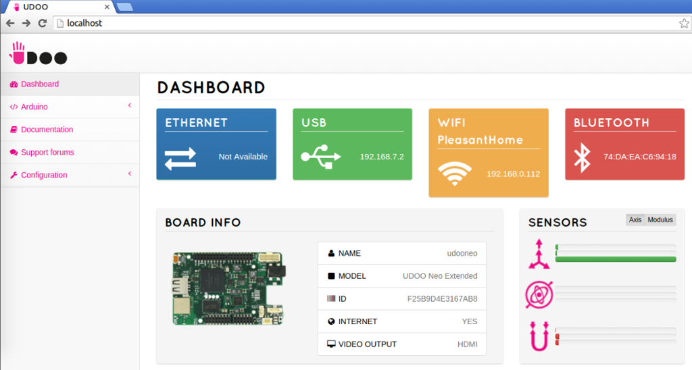
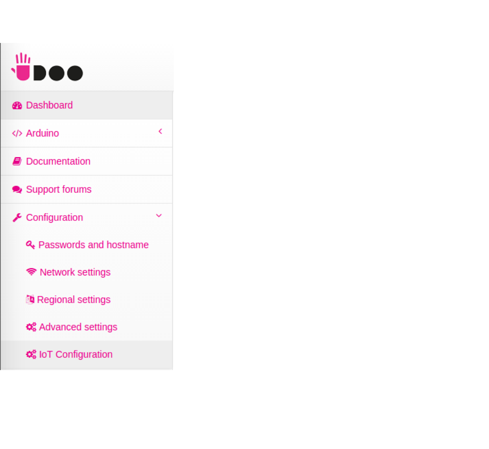
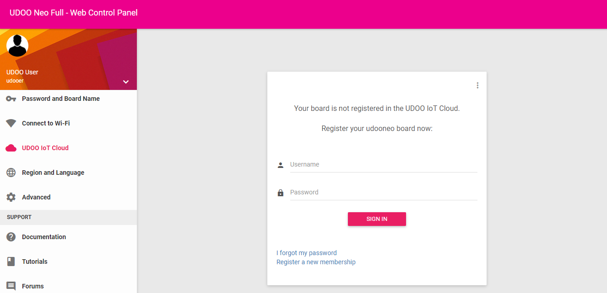
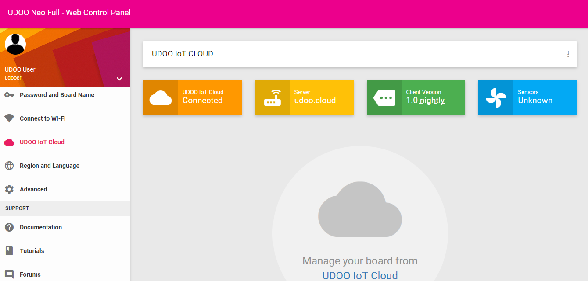

UDOO IoT Documentation
UDOO IoT Documentation
Register the Client into the UDOO IoT Cloud Server
Once the UDOO IoT Cloud Client service is installed on your UDOO board you can register the board as a gateway in the UDOO Cloud.
To register the UDOO board to the IoT Server open the UDOO WebConf:
- on UDOO NEO follow this guide to open the WebConf using the USB Direct Connection, the IP address, VNC or using a monitor, keyboard and mouse as lightweight desktop.
- on UDOO QUAD/DUAL follow this guide to open the WebConf using the USB Direct Connection, the IP address, VNC or using a monitor, keyboard and mouse as lightweight desktop.
- on UDOO X86 open the UDOO WebConf app installed using the App drawer.
For this guide we'll see how to register a UDOO NEO but the same procedure is identical for the other UDOO boards.
Next step, is connecting the board to the net. You can use an Ethernet cable or use the Connect to Wi-Fi page of the UDOO WebConf if it can be useful.
Once the board as an Internet connection, go to the UDOO IoT Cloud page.
If you haven't the UDOO IoT Cloud Client service installed you can install directly from this page using the proper button.
If the client is installed, the board will recognize as Unregistered. A login form is shown to allow you insert the UDOO IoT Account credential.
Once you click the Sign in button an automatic registration procedure will start. The UDOO device will be registered into the UDOO IoT Cloud and will keep the auth token to connect to the Cloud and communicate with it.
Once the registration is finished, the board will automatically connect to the UDOO IoT Server, and, when ìt’s ready, you’ll see the Connected string in the first box.
Now, you can directly go to the UDOO IoT Cloud Server page to see the device connected.